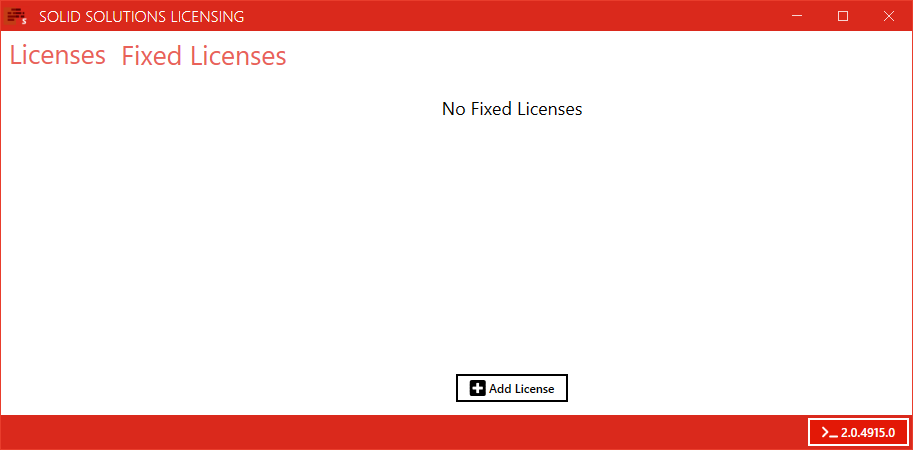

Swood Report Quickstart
Requirements
- Google Chrome.
- Internet connection.
- Swood 2022 SP1.2 or newer.
Solid Solutions License Manager
All versions of the Swood Report are licensed.
To activate the license you will need to download and install the Solid Solutions License Manager by clicking here.
Once this is done, please activate the provided license by launching the Solid Solutions License Manager and pressing the Add License button in the image below. Learn More.

Swood Report Files
Once the license is active, please download the Swood Report files by clicking here.
The download contains a zipped file with a folder called DAT, please unzip this folder and place it in your current Swood Data Directory. You can find the location of the Swood Data Directory by opening SolidWorks, then use the top menu to search for Tools > SWOOD Design > Settings

Please restart SolidWorks after replacing the DAT folder.
The Swood Data Directory may already contain a DAT folder, please make sure that you back it up before replacing it with the new one.
Swood Editor App
The Swood Editor App which allows you to modify Report settings like columns, sorting orders, output location, as well as change default Swood settings. This App is currently in the Beta stage and we would appreciate any feedback for improvements.
The Swood Editor App can be downloaded by clicking here.
Please note that the Swood Editor App uses the same license as the Swood Report. Please ensure that your license is active before launching